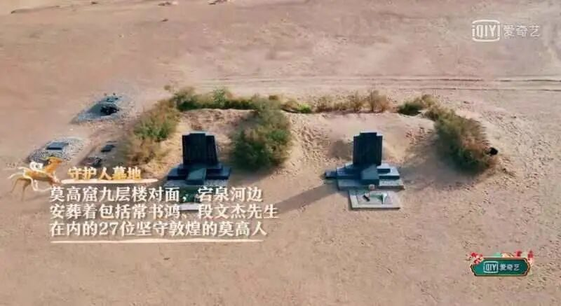
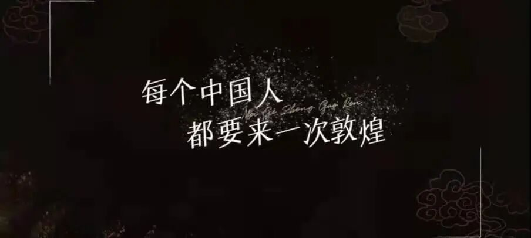

我心所爱皆敦煌
我爱着一个美妙的相逢，
是清水秀山，是峭壁峻岭；
我爱着一个浪漫的初见，
是叶下朝露，是拂面微风。
直到与你相遇我才发现，
大好四季不敌你驼铃声下粲然的一眸瞬间。
我爱，深爱着你玄妙洞窟735余，
栩栩彩塑2000身，
一路飘摇着的，
是昔日繁盛演化中历史刻下的印记；
我爱，深爱着你彩壁映辉4万平，
丝路驼铃几千年，
一行萦绕着的，
是中西文化碰撞下兼容并蓄的精华。
一个故事，一段佳话，
一隅静谧，一处震撼。
我爱着每一段让人神往的传说，
享受着这千年静默的佛教文化予我的空与灵；
我爱着每一幅色彩缤纷的壁画，
品叙着这笔触回原的窟中奇景赠我的惊与念。

一日敦煌人，一世敦煌魂，
一朝若初见，千载皆沉沦。
我爱，深爱着你们全意守护、矢志不渝，
是你们造就了这世上现存最完好的佛教圣地；
我爱，深爱着你们一路坚守、无私奉献，
是你们传承了这闪耀着中华光辉的灿烂文明。
我爱着你们用生命保护的一切，
也爱着用生命保护一切的你们。

我爱，
爱后海有树的院，
爱日暮时分的云，
爱夏朝有工的玉，
爱立秋傍晚河对岸吹来的风，
和远在西域却仍浩渺梵音于耳畔的你。
我爱着，
我们爱着，
深爱着。
来源 | 行者无疆实践团
文字 | 胡至鸿
排版 | 张清雅
审核 | 康艳虎 张清雅 胡至鸿
行者无疆实践团
QQ：2758025831

随行者一起认识世界
长按二维码